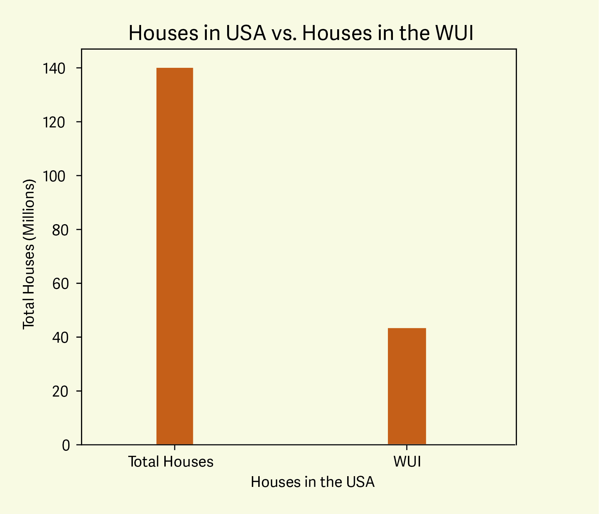

The Wildland Urban Interface
And how to be prepared for wildfire
And how to be prepared for wildfire
The Wildland Urban Interface or WUI is the zone of transition between unoccupied land and human development. It is the line, area or zone where structures and other human development meet or intermingle with undeveloped wildland or vegetative fuels. Continue scrolling to learn more about the dangers of Wildfire and how to mitigate the risk of wildfire for your home and in your community.

Every year, thousands of homes in the WUI are destroyed by wildfire. Fire behavior has the potential to be extreme, with high temps, low relative humidity and windy conditions all factoring into growth potential. Creating defensible space around your home, and having an emergency plan in place, allows for better odds of staying safe should a wildfire start in your community. Keep scrolling as we explore some case studies of previous fires in the WUI and outline some key actions to take to mitigate risk from wildfire.

Out of the approximately 140 million homes in the US, just over 40 million are located in the Wildland Urban Interface. Each year 3,000 more homes are built in the WUI.

Wildfire severity happens on a cyclical basis, however with temperatures and drought becoming more extreme, fire seasons are lasting longer. With more severe fire seasons, acres burned will increase. With more homes moving into the WUI, the need for awareness rises.
From 2010-2020, structures destroyed by wildfire increased, with the worst year being 2018 where nearly 25,000 structures were lost due to wildfire. Without action, this trend will continue. Keep yourself safe by always being prepared.
In 2004, the Waterfall fire burned 8,700 acres and destroyed 18 structures outside Carson City, starting from a rogue campfire in the cities designated WUI Zone. Prior to the fire starting, prolonged drought had occured resulting in very low fuel moistures and a haines index of 5, meaning an unstable atmosphere and high potential for large fire growth.
The Bridger Foothills fire started from a lighting strike on the southwestern portion of the bridger mountain range, in the outskirts of Bozeman, MT. The fire crossed over the ridge and burnt north and east into bridger canyon due to high temps, low humidity, and high winds. The fire grew to over 8,000 acres in a matter of two days and destroyed 68 structures, 30 of which were homes.
The breachie creek fire burned on a steep slope in dense forest for roughly three weeks, staying under 500 acres. On September 7th rare summer easterly winds reached 50-75 miles per hour, allowing the fire to reach over 130,000 acres in one night. Thousands of structures were destroyed in its wake.
If you reside in the WUI, have a plan in place for when a wildfire starts in your community. Defensible space around your home may help protect it from going up in flames. An emergency action plan will allow you to evacuate quickly and efficiently, with the confidence that you have done everything in your power to save your home.